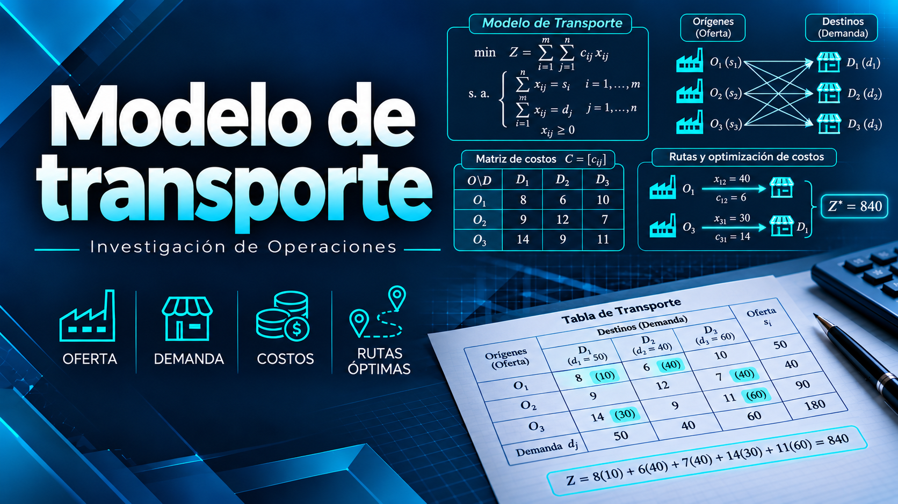

Origen
Punto que dispone de productos, materiales o recursos.
Módulo 2 · Investigación de Operaciones
Métodos de esquina noroeste, costo mínimo y aproximación de Vogel.
Fundamentos
El modelo de transporte es un caso especial de programación lineal. Determina la cantidad que debe enviarse desde cada origen hacia cada destino con el propósito de minimizar el costo total.
La solución debe respetar dos condiciones: ningún origen puede distribuir más de su oferta y cada destino debe recibir la cantidad indicada por su demanda.
Punto que dispone de productos, materiales o recursos.
Punto que necesita recibir una cantidad determinada.
Cantidad máxima disponible en cada origen.
Cantidad requerida por cada destino.
Costo de transportar una unidad por una ruta específica.
Cantidad que será enviada desde un origen hacia un destino.
Equilibrio
Un problema está balanceado cuando la oferta total es igual a la demanda total. En ese caso puede aplicarse directamente un método de solución inicial.
Cuando la oferta y la demanda son diferentes, el problema está desbalanceado y debe ajustarse antes de efectuar las asignaciones.
| Situación | Ajuste necesario | Costo ficticio |
|---|---|---|
| Oferta mayor que demanda | Agregar un destino ficticio por la diferencia. | 0 |
| Demanda mayor que oferta | Agregar un origen ficticio por la diferencia. | 0 |
Métodos de solución
Los métodos de esquina noroeste, costo mínimo y Vogel generan una solución inicial que distribuye toda la oferta y satisface toda la demanda.
Una solución inicial no siempre representa la solución óptima. Para comprobar la optimalidad puede utilizarse posteriormente el método MODI.
Comienza en la celda superior izquierda y asigna la cantidad menor entre la oferta y la demanda.
Comienza por la ruta disponible que tenga el menor costo unitario.
Utiliza penalizaciones para analizar el costo de oportunidad de no seleccionar una ruta económica.
Aplicación
Una empresa distribuye cajas de suplementos deportivos desde tres centros de almacenamiento hacia tres gimnasios.
Los valores de la tabla representan el costo en quetzales de transportar una caja por cada ruta.
| Origen | Gimnasio A | Gimnasio B | Gimnasio C | Oferta |
|---|---|---|---|---|
| Centro 1 | Q3 | Q1 | Q4 | 30 |
| Centro 2 | Q2 | Q6 | Q5 | 40 |
| Centro 3 | Q8 | Q4 | Q3 | 30 |
| Demanda | 25 | 35 | 40 | 100 |
Oferta total: 30 + 40 + 30 = 100 cajas
Demanda total: 25 + 35 + 40 = 100 cajas
El problema está balanceado.| Método | Costo | Diferencia |
|---|---|---|
| Esquina noroeste | Q400 | Costo de referencia |
| Costo mínimo | Q250 | Ahorro de Q150 |
| Aproximación de Vogel | Q250 | Ahorro de Q150 |
Costo mínimo y Vogel producen la mejor solución inicial encontrada, con un costo de Q250.
Desarrollo completo
El origen o destino ficticio no representa una ruta física: iguala oferta y demanda. Si sobra oferta representa capacidad no utilizada; si falta oferta representa demanda que los orígenes reales no pueden cubrir. En los ejemplos del documento se utiliza costo ficticio cero.
Esquina noroeste es sencilla y rápida: no compara costos y puede asignar rutas caras. Costo mínimo prioriza rutas económicas, pero sus decisiones locales no garantizan el óptimo; debe aplicar un criterio de desempate consistente. Vogel considera el costo de oportunidad, aunque requiere recalcular penalizaciones después de cada asignación.
En Vogel, un empate de penalización se resuelve comparando los costos mínimos. Si persiste, puede preferirse la celda que permita la mayor asignación.
| Método | Selección | Dificultad | Uso principal |
|---|---|---|---|
| Esquina noroeste | Posición de la celda | Baja | Obtener rápidamente una solución inicial |
| Costo mínimo | Menor costo disponible | Media | Priorizar rutas económicas |
| Vogel | Mayor penalización | Alta | Obtener una solución inicial generalmente conveniente |
| Origen | Gimnasio A | Gimnasio B | Gimnasio C | Oferta |
|---|---|---|---|---|
| Centro 1 | 25 | 5 | 0 | 30 |
| Centro 2 | 0 | 30 | 10 | 40 |
| Centro 3 | 0 | 0 | 30 | 30 |
| Demanda | 25 | 35 | 40 | — |
| Origen | Gimnasio A | Gimnasio B | Gimnasio C | Oferta |
|---|---|---|---|---|
| Centro 1 | 0 | 30 | 0 | 30 |
| Centro 2 | 25 | 5 | 10 | 40 |
| Centro 3 | 0 | 0 | 30 | 30 |
| Demanda | 25 | 35 | 40 | — |
| Elemento | Dos costos menores | Penalización |
|---|---|---|
| Centro 1 | 1 y 3 | 2 |
| Centro 2 | 2 y 5 | 3 |
| Centro 3 | 3 y 4 | 1 |
| Gimnasio A | 2 y 3 | 1 |
| Gimnasio B | 1 y 4 | 3 |
| Gimnasio C | 3 y 4 | 1 |
La mayor penalización es 3: empatan Centro 2 y Gimnasio B. Sus costos mínimos son Q2 y Q1. Se elige B por su costo Q1 y se asignan 30 cajas desde Centro 1.
Al eliminar Centro 1, la mayor penalización es 6 en A: se asignan 25 cajas desde Centro 2. Después B y C tienen penalización 2; se elige C porque contiene Q3, menor que Q4, y se asignan 30 cajas desde Centro 3. Finalmente Centro 2 envía 10 cajas a C y 5 a B.
| Origen | Gimnasio A | Gimnasio B | Gimnasio C | Oferta |
|---|---|---|---|---|
| Centro 1 | 0 | 30 | 0 | 30 |
| Centro 2 | 25 | 5 | 10 | 40 |
| Centro 3 | 0 | 0 | 30 | 30 |
| Demanda | 25 | 35 | 40 | — |
Costo mínimo y Vogel producen la mejor solución inicial encontrada en esta comparación. No se aplicó una prueba de optimalidad, por lo que Q250 no se presenta como óptimo demostrado.
Cierre
El modelo de transporte permite organizar la distribución desde varios orígenes hacia diferentes destinos considerando la oferta, la demanda y los costos.
Esquina noroeste destaca por su sencillez, costo mínimo prioriza las rutas económicas y Vogel utiliza penalizaciones para considerar el costo de oportunidad.
En el caso práctico, esquina noroeste produjo un costo de Q400 y los otros dos métodos produjeron Q250.
